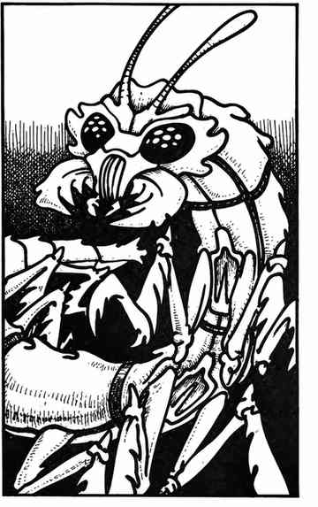

安克赫格 · Anhkheg
 |
|
安克赫格会在地下掘穴，偏好富含矿物质与有机物的土壤。它们生活在森林与优质农田中；农民因此十分害怕它们，因为安克赫格经常毁坏庄稼。它们是可怕的地下敌手，口器能撕裂并吞食肉类，颚部还会分泌消化酶；猎物被咬中后，每轮还要额外受到 1–4 点伤害，直至完全溶解。
安克赫格可向 30 尺内的目标喷射酸液，每 6 小时最多一次。若它无法消化刚吞下的肉，通常就会改用啃咬攻击。酸液命中时造成 8–32 点伤害；目标豁免成功则伤害减半。安克赫格最喜欢潜伏在地下 5–10 尺处，等触须感知到地面上经过的猎物，便直接从其脚下掘出并将其抓住。
安克赫格的甲壳呈棕色，腹部为粉红色，双眼闪烁着黑色光芒。